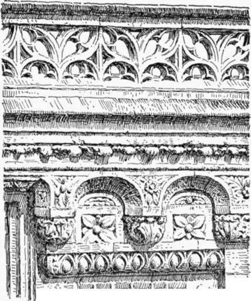
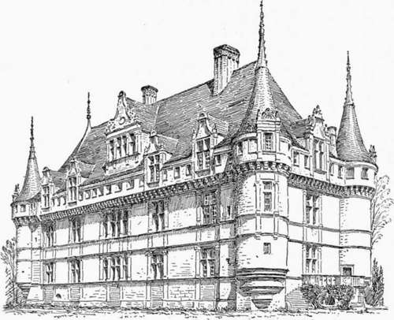
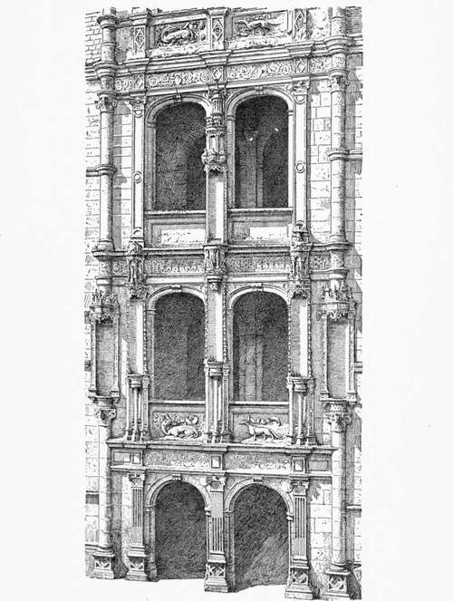

Architecture Of The Early Renaissance In France. Part 2
Description
This section is from the book "Character Of Renaissance Architecture", by Charles Herbert Moore. Also available from Amazon: Character of Renaissance Architecture.
Architecture Of The Early Renaissance In France. Part 2
In cases where the chateau was a wholly new building, it was generally placed on even ground, and the plan became symmetrical. Yet still the outline remained broken with the steep gables, chimneys, and dormers that are proper to a northern climate; and even the towers, turrets, and other features of feudal architecture were largely retained. The French chateau, as has been often remarked, was never transformed into any likeness to the Italian villa; but it was, nevertheless, so radically changed as to lose that admirable logic of design which distinguishes the French architecture of the Middle Ages. The composition of the Renaissance chateau is factitious in the sense of being artificially made up ; it is not, like the mediaeval castle, an outgrowth and expression of natural conditions and actual needs. Thus while it is still peculiarly French in character, it is not an expression of the French genius in its integrity. The French genius in its integrity has not been manifested in architecture since the Middle Ages.
The earliest palatial houses of the Renaissance in France are ornamented with debased Gothic details almost exclusively. The neo-classic elements are introduced sparingly, and are hardly noticeable in the general effect. An illustration of this is afforded in those parts of the chateau of Blois which were built under Louis XII. Here the egg and dart scheme is worked on the lower members of the cornice, while elsewhere the mediaeval details are retained. This cornice (Fig. no) is a curious medley, though of no exceptional kind. Against a flat lower member is a corbel-table (a Romanesque feature) treated in a Flamboyant way, the small arches being splayed and having the three-centred form. The crowning mouldings have approximately true Gothic profiling, while a Flamboyant parapet of elaborate design surmounts the whole.
1 Cf. Viollet le Due, s. v. Chateau, p. 190.
Of the distinctive early French Renaissance architecture, which took form during the reign of Francis I, a fine example is the chateau of Azay le Rideau (Fig. in). This building was an entirely new structure, not a mediaeval one remodelled. It is of moderate dimensions, and, although it has considerable beauty; it well illustrates the hybrid and factitious character of early French Renaissance design. There was no need of defences, yet round towers are set on the angles simulating those of feudal times, and each one of these is crowned with a low overhanging story supported on corbels, and having a superficial resemblance to the mediaeval machicolated gallery. This overhanging attic is carried along each side of the building, and its numerous small square windows are so spaced as to give the intervening wall solids somewhat the appearance of battlements, while steep gables, crowned with spiky pinnacles, and high dormers and chimneys make up a total composition of great picturesqueness. The larger features are all of mediaeval form, but the windows are flanked with classic pilasters and crowned with entablatures. The most elaborate, and least admirable, feature of this building is an ornamental bay (Fig. 112), not seen in the general view here shown (Fig. 111), which embraces the main portal. This bay is worthy of analysis because it is a highly characteristic example of French Renaissance design in which distorted neo-classic details are worked into a pseudo-Gothic scheme. The composition is plainly derived from the neighbouring castle of Chateaudun, which was built at the beginning of the sixteenth century, and ornamented in the Flamboyant Gothic style. In Chateaudun (Fig. 113) a staircase tower rises over the main portal of the south fagade in four stories. The front of this tower, which is flush with the wall of the facade, is treated as an enriched bay, the upper two stories of it reaching above the main cornice, and being flanked by round turrets overhanging the wall, which is corbelled out to support them. The portal is double, and each upper story of the bay has a pair of large openings. All of these openings have the Flamboyant depressed arches, and the whole bay is flanked by buttresses, while a smaller buttress is set against a middle pier that rises through the composition. All of these parts have the characteristic Flamboyant forms and ornamental details. The openings are splayed, and their profilings have the sharp Flamboyant arrises. The buttresses have the multiplicity of angular members set obliquely, with the simulated interpene-trations, and the niches and canopies, of the latest Gothic style.
Fig. 110. — Cornice of Blois.
Fig. 111. — Azay le Rideau.
Returning now to the portal of Azay le Rideau (Fig. 112), we find this scheme substantially reproduced, but with greatly altered details. In place of the buttresses we have a remarkable combination of columns, pilasters, and other neo-classic ornaments put together so as to produce a pseudo-Flamboyant
Fig. 112. — Portal of Azay le Rideau
Gothic effect. The portals and windows are flanked with pilasters and crowned with entablatures, and the whole is bounded right and left by superimposed columns broken by highly ornamented niches, and banded by the string courses and entablatures. On the first floor over the portal the window pilasters are made to appear as hidden behind tall ornamental niches, composed of many neo-classic and nondescript elements, arranged in the manner of the details on Flamboyant buttresses. Only small portions of the base mouldings of the pilasters appear beneath this filigree overlay. In the story next above, the central pilaster only is hidden in this way, but here a part of the capital, instead of the base, comes into view. The manner in which the pseudo-Gothic features are adjusted to the neo-classic elements of the composition is curious in other ways. The pilasters of the several superimposed orders are, of course, of equal length in each story, and their entablatures make strongly marked horizontal lines. But the nondescript ornaments laid over these orders are carried up to unequal heights, all of them crossing the middle entablature, and the finial of the central one reaching above the architrave of the top entablature, while the lateral pilasters of this upper order are wholly exposed to view, except that the finials of the canopies over the niches below cover parts of their bases. The mixture of neo-classic and pseudo-Gothic forms is carried out in the details of these superimposed ornaments. Under the base of each niche are two diminutive pilasters, set obliquely so as to present an arris in front, like the angular members in Flamboyant buttresses, as in Chateaudun, and between these is a small shaft supporting a corbel which forms the base of the niche. The niche is flanked by slender pilasters set obliquely in conformity with those below, but these pilasters are almost entirely hidden from view by very salient nondescript ornaments worked on the face of each. The mouldings of the grouped bases, which are of different magnitudes, interpenetrate in Flamboyant fashion, and the canopies over the niches are made up of miniature entablatures on curved plans ornamented with filigree, and each of them is surmounted by a group of minute niches with statuettes, and crowned by a finial. The windows have the depressed arches of the Flamboyant style, with panelled dadoes beneath, as in Chateaudun; but their profilings are pseudoclassic, and they have keystones at their crowns. The total scheme is more mediaeval than classic, notwithstanding the free use of neo-classic orders. To produce a continuity of upright lines, and thus emphasize the Gothic effect, the entablatures are broken into ressauts over the pilasters, and are carried around the lateral columns, as before remarked. The double portal is the only part of the composition that is quite free from mediaeval elements. The order and the arches are here combined in the ancient Roman manner, as they are, indeed, in the upper stories; but here the arches have the Roman semicircular form, and the order is not overlaid with other ornaments. Classic proportions are not at all observed. The pilasters are short, and are raised on high pedestals, which are necessary to the composition in order to give the effect of adequate foundation for the superstructure. The design as a whole has no reason on structural grounds, nor has it any logic of simulated structure. Such merit as it has is of a purely abstract ornamental kind entirely extraneous to the building. Apart, however, from its factitious general character, and its incongruous details, the chateau of Azay le Rideau has a thoroughly French character, and is one of the finest monuments of the early Renaissance in the country. Among other chateaux contemporaneous with Azay le
Continue to:
- prev: Chapter XI. Architecture Of The Early Renaissance In France
- Table of Contents
- next: Architecture Of The Early Renaissance In France. Part 3